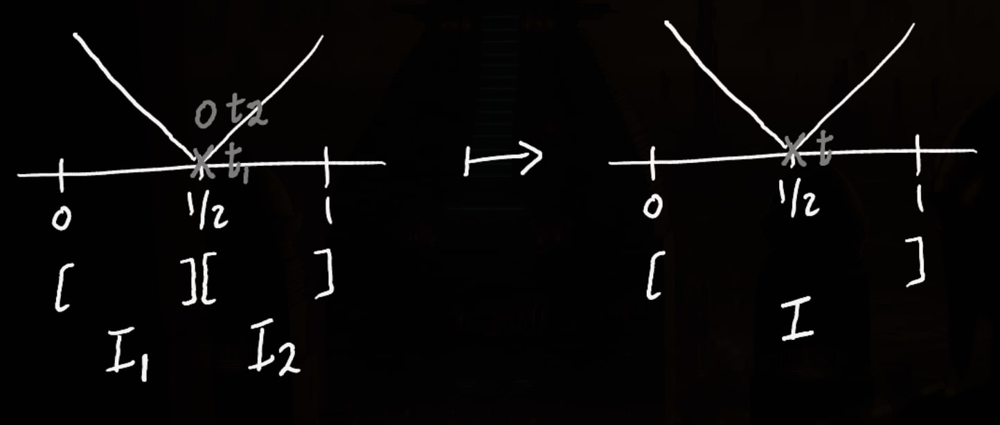
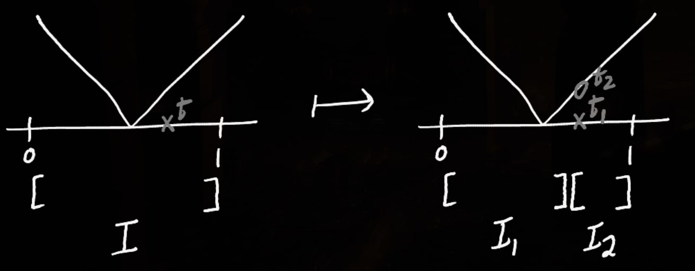

Chapter 10 - Section 01
Exercises
1
a
By definition of a gauge, we have \begin{aligned} t_i - \delta(t_i) &\leq x_{i-1} \\ x_i &\leq t_i + \delta(t_i) \end{aligned} Implying, \begin{aligned} x_i - x_{i-1} \leq t_i + \delta(t_i) - x_{i-1} \\ -t_i + \delta(t_i) \geq -x_{i-1} \end{aligned} Concluding for all $i \in { 1,2, \dots, n }$, \begin{aligned} x_i - x_{i-1} &\leq t_i + \delta(t_i) - t_i + \delta(t_i) \\ &\leq 2 \delta(t_i) \end{aligned}
b
Clearly $x_i - x_{i-1} \leq 2 \delta^*$ for all $i \in {1, 2, \dots, n}$. Then $\max \\{x_i - x_{i-1}\\} = ||\dot{p}|| \leq 2 \delta^*$.
c
$\max \{ x_i - x_{i-1} \} \leq \delta_* = inf \{ \delta(t) \}$. Then $x_i - x_{i-1} \leq \delta_*$ \begin{aligned} x_i &\leq \delta(t_i) + x_{i-1} \\ &\leq \delta(t_i) + t_i \qquad \text{by def } x_{i-1} \leq t_i \\ \end{aligned} Analogously, \begin{aligned} x_{i-1} &\geq - \delta_*(t_i) + x_i \\\\ &\geq - \delta_*(t_i) + t_i \qquad \text{by def } x_i \geq t_i \end{aligned} Therefore, $[x_{i-1}, x_i] \subset [ t_i - \delta(t_i), t_i + \delta(t_i) ]$, i.e $Q$ is $\delta-$fine.
d
2
a
Observe for interval $[x_{i-1}, x_i]$ for any partition, \begin{aligned} \forall i,j, \quad [x_{i-1}, x_i] \cap [x_{j-1}, x_j] = \begin{cases} [x_{i-1}, x_i]\qquad & i = j \\\\ \{ x_i \} \qquad &j = i + 1 \\\\ \{ x_{i-1} \} \qquad &j= i - 1 \\\\ \phi \qquad &\text{otherwise} \end{cases} \end{aligned} It is easy to see considering any third interval containing a point $x$, necessarily implies two intervals share an intermediary point, violating the partitioning condition.
b
Yes. For example, on $[0,1]$, we have the partition: \begin{aligned} &([0, 1/4], 1/4), \\ &([1/4, 1/2], 1/4), \\ &([1/2, 3/4], 3/4), \\ &([3/4, 1], 3/4) \end{aligned}
3
a
For every intervals $I_1, I_2$ with a common tag $t_1 = t_2$, subtitute them by a single interval $I$ with tag $t = t_1 = t_2$.
Clearly $S(f,{I}) = S(f, {I_1, I_2})$.
b
Yes.
c
For every interval $I$ with a tag $t$ contained only in it, Partition $I$ to $I_1, I_2$ separated at $t$, with tags $t_1 = t_2 = t$.
4
a
Let $I$ be an interval containing $1$. Denote its tag by $t = 1 + x$. As both $1$ and $1 + x$ are in $I$, $|I| \geq x$. But by definition $\delta(t) = \delta(1+x) = 0.5 x < x$, Contradiction. Therefore the tag of $I$ is necessarily $1$.
b
At maximum two intervals $I_1$ and $I_2$ can contain $1$. From a, their tags are $t_1 = t_1 = 1$. By definition $\delta(1) = 0.01$, So $|I_1| + |I_2| \leq 0.01 + 0.01 = 0.02$.